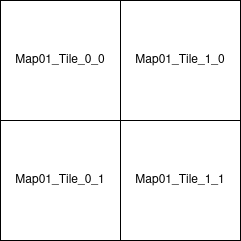

Import/Package a Large Map
Large maps generated in RoadRunner can be imported into the source build of CARLA and packaged for distribution and usage in a CARLA standalone package. The process is very simlar to that of standard maps with the addition of specific nomenclature for tiles and batch importing.
Files and folders
All files to be imported should be placed in the Import folder of the root CARLA directory. These files should include:
- The mesh of the map in multiple
.fbxfiles representing different tiles of the map. - The OpenDRIVE definition in a single
.xodrfile.
Warning
You cannot import large maps and standard maps at the same time.
The naming convention of map tiles is very important. Each map tile should be named according to the following convention:
<mapName>_Tile_<x-coordinate>_<y-coordinate>.fbx
Be aware that a more positive y coordinate refers to a tile lower on the y-axis. For example,Map01_Tile_0_1 would sit just below Map01_Tile_0_0.

A resulting Import folder with a package containing a large map made of four tiles should have a structure similar to the one below:
Import
│
└── Package01
├── Package01.json
├── Map01_Tile_0_0.fbx
├── Map01_Tile_0_1.fbx
├── Map01_Tile_1_0.fbx
├── Map01_Tile_1_1.fbx
└── Map01.xodr
Note
The package.json file is not strictly necessary. If there is no package.json file created, the automated import process will create one. Find out more about to structure your own package.json in the next section.
Create the JSON description (Optional)
The .json description is created automatically during the import process, but there is also the option to create one manually. An existing .json description will override any values passed as arguments in the import process.
The .json file should be created in the root folder of the package. The file name will be the package distribution name. The content of the file describes a JSON array of maps and props with basic information for each one.
Maps need the following parameters:
- name: Name of the map. This must be the same as the
.fbxand.xodrfiles. - xodr: Path to the
.xodrfile. - use_carla_materials: If True, the map will use CARLA materials. Otherwise, it will use RoadRunner materials.
- tile_size: The size of the tiles. Default value is 2000 (2kmx2km).
- tiles: A list of the
.fbxtile files that make up the entire map.
Props are not part of this tutorial. Please see this tutorial for how to add new props.
The resulting .json file should resemble the following:
{
"maps": [
{
"name": "Map01",
"xodr": "./Map01.xodr",
"use_carla_materials": true,
"tile_size": 2000,
"tiles": [
"./Map01_Tile_0_0.fbx",
"./Map01_Tile_0_1.fbx",
"./Map01_Tile_1_0.fbx",
"./Map01_Tile_1_1.fbx"
]
}
],
"props": []
}
Making the import
When all files have been placed in the Import folder, run the following command in the root CARLA folder:
make import
Depending on your system, Unreal Engine may consume too much memory to be able to import all files at once. You can choose to import the files in batches of MB by running the command:
make import ARGS="--batch-size=200"
Two more flags exist for the make import command:
--package=<package_name>specifies the name of the package. By default, this is set tomap_package. Two packages cannot have the same name, so using the default value will lead to errors on a subsequent ingestion. It is highly recommended to change the name of the package. Use this flag by running the command:
make import ARGS="--package=<package_name>"
--no-carla-materialsspecifies that you do not want to use the default CARLA materials (road textures etc). You will use the RoadRunner materials instead. This flag is only required if you are not providing your own.jsonfile. Any value in the.jsonfile will override this flag. Use this flag by running the command:
make import ARGS="--no-carla-materials"
All files will be imported and prepared to be used in the Unreal Editor. The map package will be created in Unreal/CarlaUE4/Content. A base map tile, <mapName>, will be created as a streaming level for all the tiles. The base tile will contain the sky, weather, and large map actors and will be ready for use in a simulation.
Note
It is currently not recommended to use the customization tools provided for standard maps in the Unreal Editor, e.g., road painter, procedural buildings, etc.
Package a large map
To package your large map so it can be used in the CARLA standalone package, run the following command:
make package ARGS="--packages=<mapPackage>"
This will create a standalone package compressed in a .tar.gz file. The files will be saved in the Dist folder on Linux, and /Build/UE4Carla/ on Windows. They can then be distributed and packaged to use in standalone CARLA packages.
If you have any questions about the large map import and packaging process, then you can ask in the forum.